Layer 0
 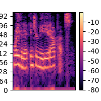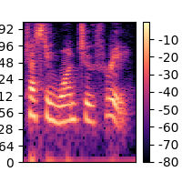
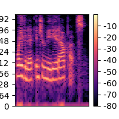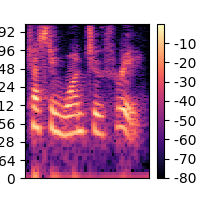

Layer 1

Layer 2
 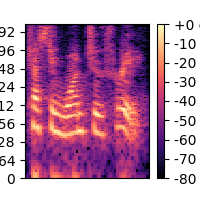
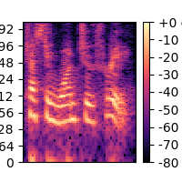
Layer 3

Layer 4
 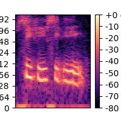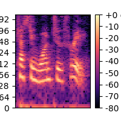
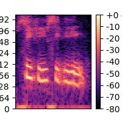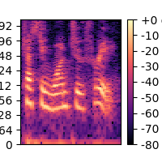Layer 5
Layer 6


Layer 7

Layer 8


Layer 9

Layer 10

Layer 11

Layer 12
Layer 13
Layer 14
Layer 15
Layer 16
Layer 17

Layer 18


Layer 19


Layer 20

Layer 21
Layer 22
Layer 23


| Highest variance channel | 2nd highest variance channel | 3rd highest variance channel | 4th highest variance channel | |
Layer 0 | 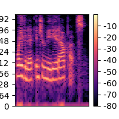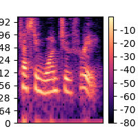 | 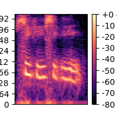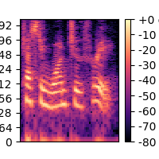 | 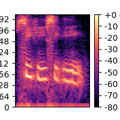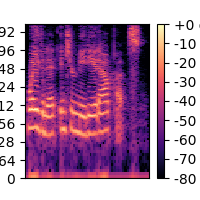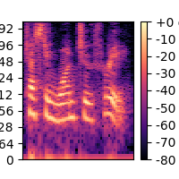 | 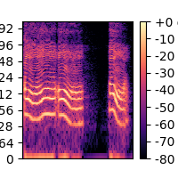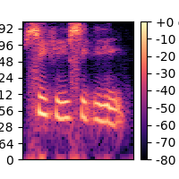 |
Layer 1 | 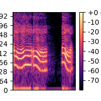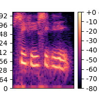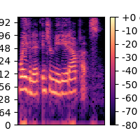 | 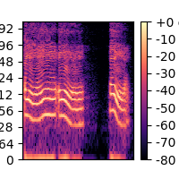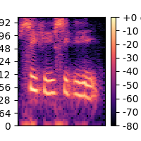 | 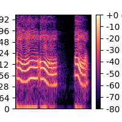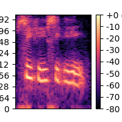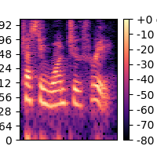 | 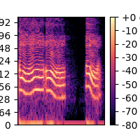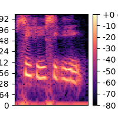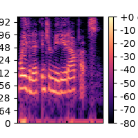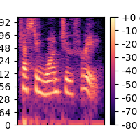 |
Layer 2 | 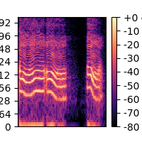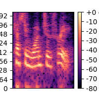 | 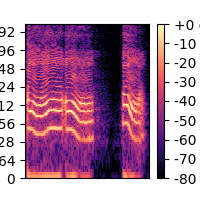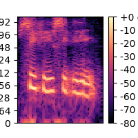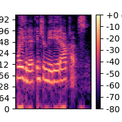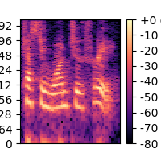 | | 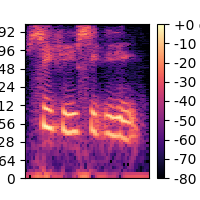 |
Layer 3 | 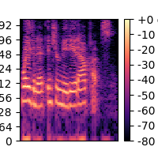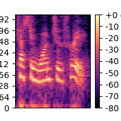 | 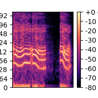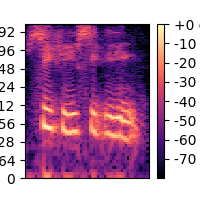 | 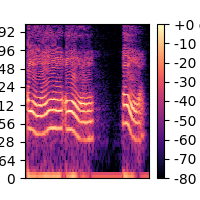 | 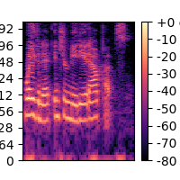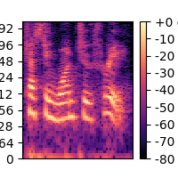 |
Layer 4 | 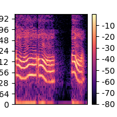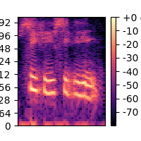 | 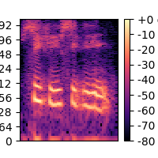 | 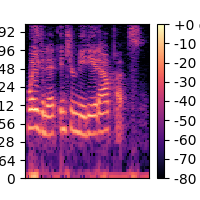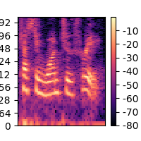 | 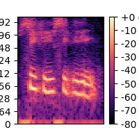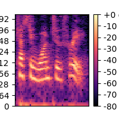 |
Layer 5 | 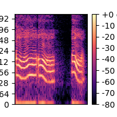 | 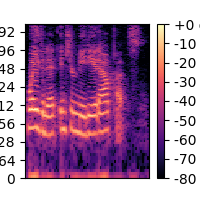 | 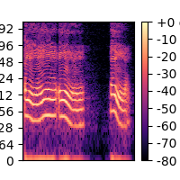 | 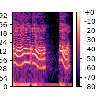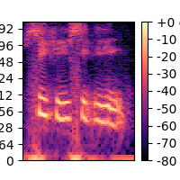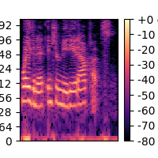 |
Layer 6 | 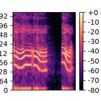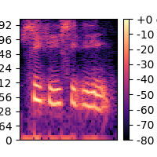 | | | |
Layer 7 | | |||
Layer 8 | | | | |
Layer 9 | | |||
Layer 10 | | |||
Layer 11 | | |||
Layer 12 | ||||
Layer 13 | ||||
Layer 14 | ||||
Layer 15 | ||||
Layer 16 | ||||
Layer 17 | | |||
Layer 18 | | |||
Layer 19 | | | | |
Layer 20 | | |||
Layer 21 | ||||
Layer 22 | ||||
Layer 23 | |